Visiter Paris
Paris se visite toute l’année, et l’hiver est même la meilleure saison pour les musées. Encore faut-il savoir ce qui se réserve, quel jour tout est fermé et à quelle heure passer.
Photo : Adrien / Unsplash
Paris est la ville la plus visitée au monde, et cela se sent : la plupart des grands sites demandent aujourd’hui de réserver un créneau horaire, même quand l’entrée est gratuite. Bonne nouvelle, presque tout se rejoint en métro en moins d’une demi-heure, et les grands monuments sont regroupés le long de la Seine.
Retenez trois jours de fermeture : le Louvre ferme le mardi, Orsay et Versailles le lundi. De novembre à mars, les files raccourcissent, plusieurs monuments sont gratuits le premier dimanche du mois et les nocturnes des musées permettent de finir la journée au chaud. Chaque guide ci-dessous vous dit quoi réserver, comment y aller et à quel moment.
Monuments et panoramas
-
 Tour Eiffel
Tour EiffelTrois étages, plus de 300 mètres et la vue la plus célèbre de Paris. La visite se prépare : billets officiels, bon créneau et, si vous avez les jambes, les escaliers.
-
 Notre-Dame
Notre-DameRouverte en décembre 2024 après l’incendie, la cathédrale a retrouvé sa pierre claire et sa lumière. L’entrée est gratuite ; réserver un créneau fait gagner beaucoup de temps.
-
 Sainte-Chapelle
Sainte-ChapelleQuinze verrières, plus de mille scènes de vitrail et presque pas de murs. Par un jour de soleil, la chapelle haute est l’un des plus beaux intérieurs du monde.
-
 Arc de Triomphe
Arc de TriompheAu sommet des Champs-Élysées, 284 marches mènent à une terrasse d’où partent douze avenues en étoile. C’est l’une des vues les plus graphiques de Paris.
-
 Opéra Garnier
Opéra GarnierMarbre, dorures et plafond de Chagall : le Palais Garnier est le décor le plus fastueux de Paris, et il se visite librement en journée.
-
 Catacombes
CatacombesVingt mètres sous Paris, les ossements de millions de Parisiens rangés le long des galeries. Rénovées en 2026, les Catacombes ne se visitent que sur réservation.
-
 Panthéon
PanthéonLa crypte des grands hommes et des grandes femmes et le pendule de Foucault, sous la coupole du Quartier latin.
-
 Les Invalides
Les InvalidesLe tombeau de Napoléon sous le dôme doré et le musée de l’Armée, en plein 7e arrondissement.
-
 La Conciergerie
La ConciergerieLe palais des rois devenu prison de la Terreur, avec le cachot de Marie-Antoinette et l’HistoPad.
-
 Le Sacré-Cœur
Le Sacré-CœurLa basilique blanche au sommet de Montmartre, entrée gratuite et dôme panoramique à 300 marches.
Musées
-
 Louvre
LouvreLe plus grand musée du monde ne se visite pas en entier : il se prépare. Réservez votre créneau, choisissez trois ou quatre ailes et évitez le mardi, jour de fermeture.
-
 Musée d’Orsay
Musée d’OrsayMonet, Renoir, Van Gogh, Degas : la plus grande collection impressionniste du monde, dans une ancienne gare. La nocturne du jeudi est le meilleur moment pour y aller.
-
 Musée de l’Orangerie
Musée de l’OrangerieLes huit toiles géantes des Nymphéas de Monet dans leurs salles ovales, au bout des Tuileries.
-
 Musée Rodin
Musée RodinLe Penseur, le Baiser et la Porte de l’Enfer dans un hôtel particulier et son grand jardin de sculptures.
-
 Fondation Louis Vuitton
Fondation Louis VuittonLe vaisseau de verre de Frank Gehry et l’exposition Gustave Fayet jusqu’au 8 mars 2027.
-
 Musée Picasso
Musée PicassoLa plus grande collection Picasso au monde, dans un hôtel particulier du XVIIe siècle du Marais.
Quartiers et balades
-
 Montmartre
MontmartreUne colline de village au-dessus de Paris : escaliers, vignes, ateliers de peintres et, tout en haut, la basilique blanche du Sacré-Cœur.
-
 Croisière sur la Seine
Croisière sur la SeineUne heure sur l’eau, et Paris défile : Notre-Dame, le Louvre, Orsay, la tour Eiffel. C’est la meilleure façon de comprendre la ville le premier jour.
-
 Le Marais
Le MaraisHôtels particuliers du XVIIe siècle, musées gratuits, falafels et boutiques ouvertes le dimanche : le Marais est le quartier le plus agréable à parcourir à pied.
-
 Quartier latin et Luxembourg
Quartier latin et LuxembourgLe Paris des étudiants et des librairies, du Panthéon au jardin du Luxembourg. Un quartier à parcourir à pied, entre deux cafés.
-
 Champs-Élysées
Champs-ÉlyséesDeux kilomètres d’arbres illuminés de la Concorde à l’Arc de Triomphe, avec le retour d’un marché de Noël en 2026.
-
 Cimetière du Père-Lachaise
Cimetière du Père-LachaiseJim Morrison, Oscar Wilde, Piaf et Chopin dans le plus célèbre cimetière du monde, gratuit.
-
 Saint-Germain-des-Prés
Saint-Germain-des-PrésL’église la plus ancienne de Paris, le Flore, les Deux Magots et les galeries de la rive gauche.
-
 Saint-Michel
Saint-MichelLa fontaine aux dragons, la rue de la Huchette et Shakespeare and Company, avec Notre-Dame juste en face.
-
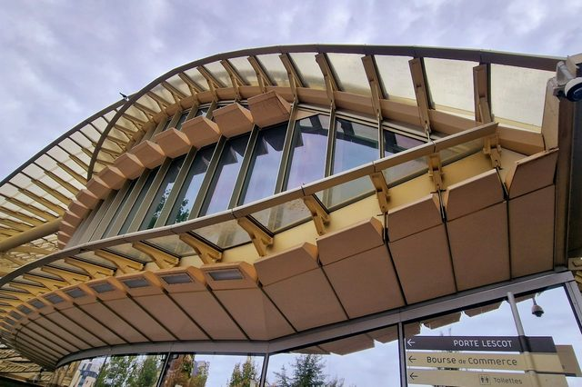
Châtelet-Les HallesSaint-Eustache, la Canopée, la Bourse de Commerce et la rue Montorgueil, au carrefour de tout Paris.
-
 Pigalle
PigalleLe Moulin Rouge, la rue des Martyrs et les musées cachés de SoPi, au pied de Montmartre.
-
 Trocadéro
TrocadéroLa plus belle vue sur la tour Eiffel, depuis l’esplanade du palais de Chaillot et ses jardins.
-
 Canal Saint-Martin
Canal Saint-MartinÉcluses, passerelles et terrasses au bord de l’eau : la balade préférée des Parisiens.
-
 Bastille
BastilleLa colonne de Juillet, l’Opéra, le grand marché du dimanche et la Coulée verte.
-
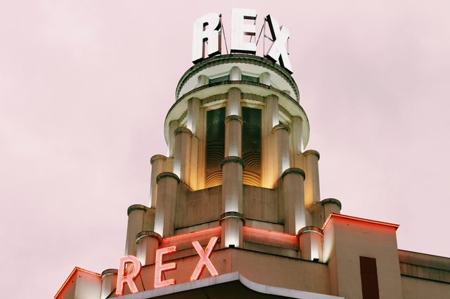
Opéra et Grands BoulevardsL’Opéra, les grands magasins, les passages couverts et le Grand Rex : le Paris des sorties.
-
 Belleville
BellevilleUne vue sur tout Paris, du street art et les cuisines du monde, dans l’ancien village des guinguettes.
-
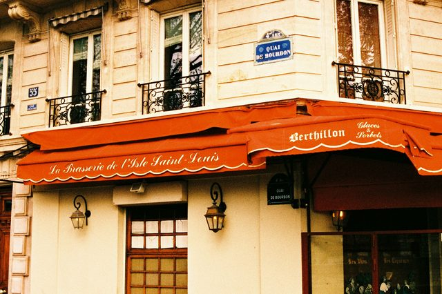
Île Saint-LouisDes quais tranquilles, des hôtels du XVIIe siècle, Berthillon et la plus belle vue sur Notre-Dame.
-
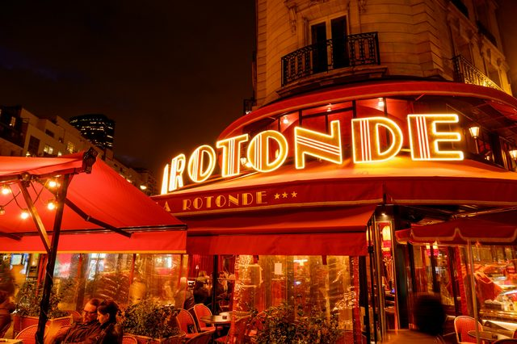
MontparnasseLes cafés des Années folles, le cimetière des artistes et deux musées d’ateliers gratuits.
-
 Bercy
BercyLe parc, les anciens chais de la Cour Saint-Émilion, la Cinémathèque et la passerelle sur la Seine.
-
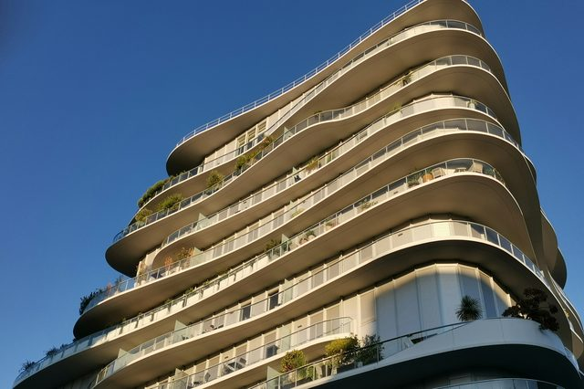
BatignollesUn village dans Paris : le square, la place de l’église, le marché bio et le grand parc Martin-Luther-King.
-
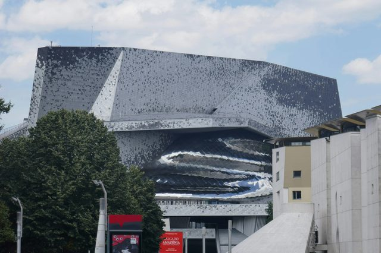
La VilletteLa Cité des sciences, la Géode, la Philharmonie et un immense parc, idéal en famille.
-
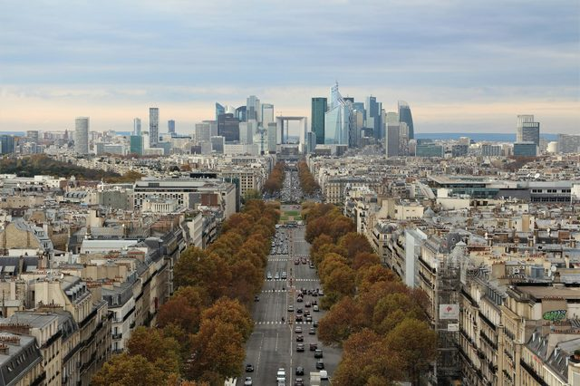
La DéfenseLa Grande Arche, les gratte-ciel et l’art en plein air, au bout de l’axe des Champs-Élysées.
-
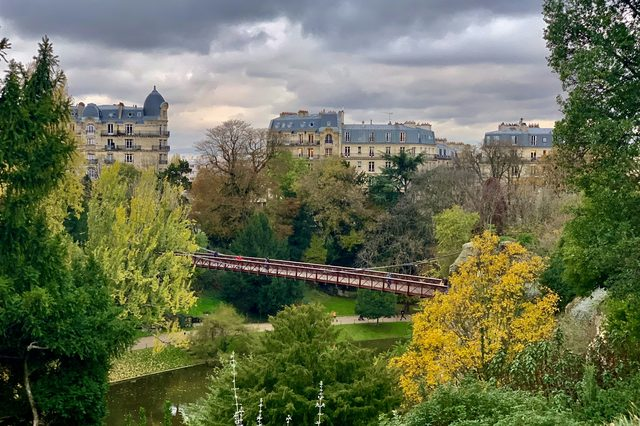
Parc des Buttes-ChaumontUn décor de montagne en pleine ville : le temple de la Sibylle, le lac, la grotte et sa cascade.
Sorties et saison
-
 Noël à Paris
Noël à ParisLes Champs-Élysées s’illuminent le 22 novembre 2026, et leur marché de Noël revient après dix ans d’absence. Voici où voir la magie de Noël à Paris.
-
 Moulin Rouge
Moulin RougeLa revue Féerie et le French Cancan sous le moulin de Pigalle, à 21 h ou 23 h, avec ou sans dîner.
-
 Galeries Lafayette
Galeries LafayetteLa coupole Art nouveau, le rooftop gratuit face à l’Opéra et le sapin géant de Noël.
-
 Crazy Horse
Crazy HorseLe cabaret le plus avant-gardiste de Paris, ses jeux de lumière et son spectacle Totally Crazy.
-
 Musée Grévin
Musée GrévinPlus de 200 stars de cire et le palais des Mirages, sur les Grands Boulevards.
Autour de Paris
-
 Versailles
VersaillesLa galerie des Glaces, les appartements du Roi, les jardins de Le Nôtre et le domaine de Marie-Antoinette : une journée entière, à quarante minutes de Paris.
-
 Château de Fontainebleau
Château de FontainebleauSept siècles de rois et Napoléon dans un château de la Renaissance, à une heure de Paris en train.
-
 Château de Chantilly
Château de ChantillyLe musée Condé, les Grandes Écuries et un parc immense, à 25 minutes de la gare du Nord.
-
 Château de Vincennes
Château de VincennesLe plus haut donjon médiéval d’Europe et une Sainte-Chapelle gothique, au bout de la ligne 1.
-
 Disneyland Paris
Disneyland ParisDeux parcs, un village de restaurants et, depuis mars 2026, le monde de La Reine des Neiges. Disneyland Paris se rejoint en RER depuis le centre de Paris.
-
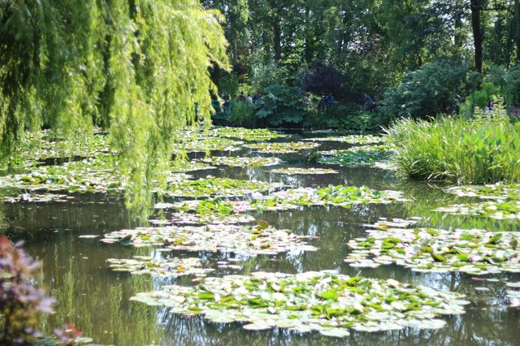
GivernyLa maison et les jardins de Claude Monet, avec le bassin aux nymphéas et le pont japonais.
-
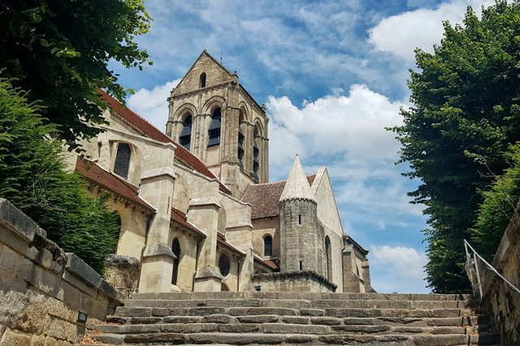
Auvers-sur-OiseL’auberge et la chambre de Van Gogh, l’église qu’il a peinte et sa tombe, à une heure de Paris.
-
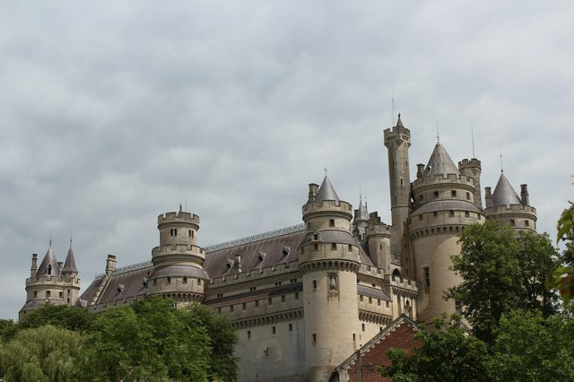
Pierrefonds et CompiègneLe château fort de Viollet-le-Duc et le palais impérial de Compiègne, au cœur de la forêt.